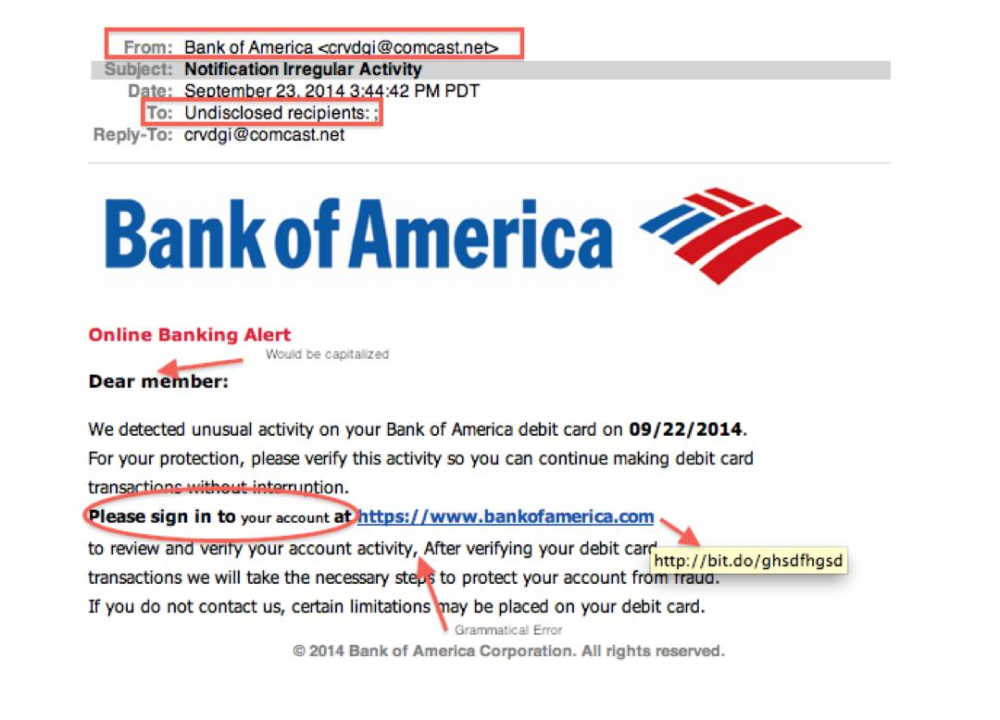

A phishing email is a fraudulent email sent by cybercriminals impersonating a reputable organization such as your bank, Google, or employer. The goal is to trick you into disclosing sensitive information rather than directly hacking your device.
The attacker's main goal is to cause you to panic, act quickly, and unintentionally share sensitive information.
Imagine a stranger wearing your bank's uniform arrives at your door and says:
"Your bank is at risk. Give me your PIN right away to secure it."
You'd never believe that in real life.
However, the same trick is used online via emails and messages, and it works on a large number of people each day.
"Phishing emails do not compromise your security. They trick you into giving it away."

Example of a phishing email. Attackers often use urgency, fear, and suspicious links to trick users into revealing information.
From: bankofamerica-support.net/security-alert
To: you@gmail.com
Subject: IMPORTANT: Your Account will be Locked Within a day!
Dear valued customer,
Suspicious activity has been found on your account. If you don't confirm your identity right away, your account will be permanently locked for your protection.
To secure your account right away, click the following link:
👉 www.bankofamerica-secure-login.net/verify
You have a full day to take action. If you don't verify, you will be suspended permanently.
The Security Team of Bank of America
This is a fake email. Notice the suspicious link, panic, and urgency — these are classic phishing techniques used to trick users into acting without thinking.
"The email seemed legitimate. The logo appeared real. Even the fear seemed real. That is exactly how phishing works." 🎣